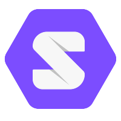

Browse the Solid web
Paste the address of a pod, a folder or a profile above, or pick one of the examples.
Log in to see and edit what your WebID has access to.

SolidOS Browser mashlib 3.1.0Paste the address of a pod, a folder or a profile above, or pick one of the examples.
Log in to see and edit what your WebID has access to.